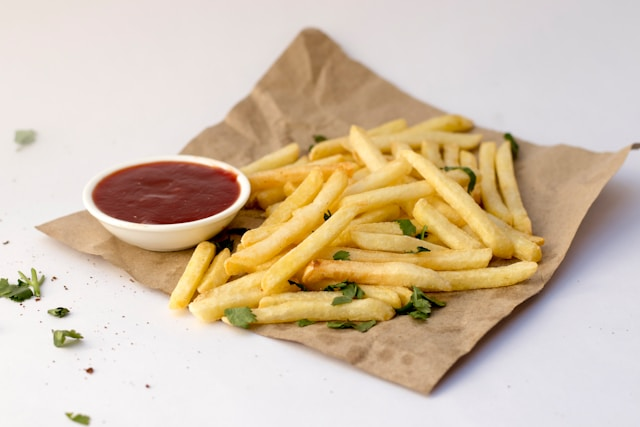

French Fries

Description
Air fryed French Fries. Easy, uncomplicated, tasty.
Ingredients
- 1 bag of frozen French fries
- Optional: Sunflower oil
Steps
- Preheat Air Fryer: Set to 375°F (190°C).
-
Place fries in the air fryer basket in a single layer (don’t overcrowd).
Add a spoon of sunflower oil for extra crispness.
- Air fry for 15–18 minutes, shaking the basket halfway through.
- Serve.
Home